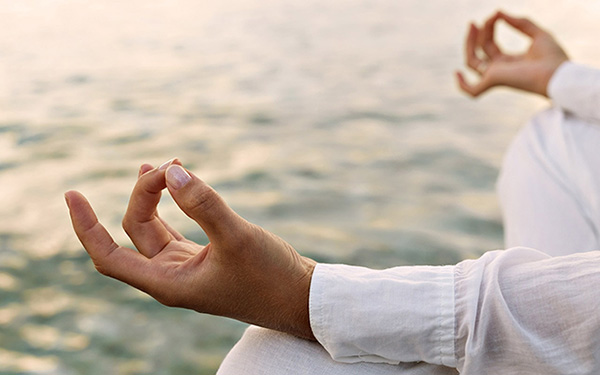

How to meditate?
With the hectic pace and demands of modern life, many people feel stressed and over-worked. It often feels like there is just not enough time in the day to get everything done. Our stress and tiredness make us unhappy, impatient and frustrated. It can even affect our health. We are often so busy we feel there is no time to stop and meditate! But meditation actually gives you more time by making your mind calmer and more focused. A simple ten or fifteen minute breathing meditation as explained below can help you to overcome your stress and find some inner peace and balance.
Meditation can also help us to understand our own mind. We can learn how to transform our mind from negative to positive, from disturbed to peaceful, from unhappy to happy. Overcoming negative minds and cultivating constructive thoughts is the purpose of the transforming meditations found in the Buddhist tradition. This is a profound spiritual practice you can enjoy throughout the day, not just while seated in meditation.
On this website you can learn the basics of Buddhist meditation. A few books are mentioned that will help you to deepen your understanding if you wish to explore further. Anyone can benefit from the meditations given here, Buddhist or not. We hope that you find this website useful and that you learn to enjoy the inner peace that comes from meditation.